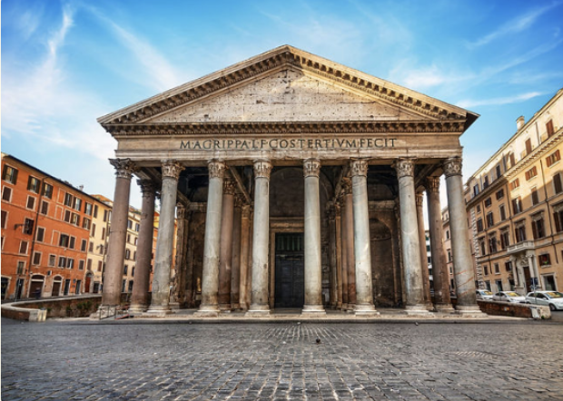
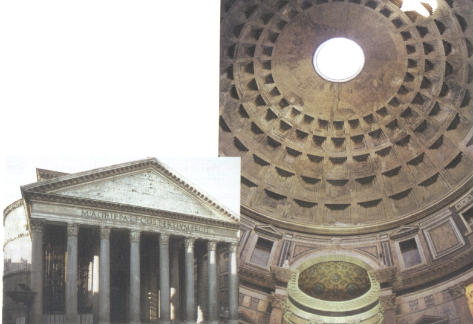

The Pantheon is one of the most remarkable buildings from ancient Rome. Its massive concrete dome and perfect proportions demonstrate the advanced engineering skills of Roman architects and builders.


What It Is
- Originally built in 27 BC and rebuilt between CE 118 and 128 under Emperor Hadrian
- A Roman temple with a columned portico and circular rotunda
- Features the largest dome of the ancient world at 142 feet wide
- Designed to emphasize the interior rather than the exterior
- Constructed using layered materials to reduce weight and increase strength
How It Works
Oculus
- A 27-foot-wide opening at the center of the dome
- The only source of natural light inside the Pantheon
- Allows rainwater to enter and drain through the sloped floor
Coffers
- Decorative sunken panels in the ceiling
- Reduced the weight of the dome
- Originally decorated with bronze details
Dome
- The largest unreinforced concrete dome of its time
- Built using progressively lighter materials
- Symbolizes the heavens and the power of Rome
Significance
The Pantheon was a revolutionary achievement in Roman architecture. Its unreinforced dome has stood for over 2,000 years, proving the durability and ingenuity of Roman engineering.
The building was most likely dedicated to all Roman gods. Some scholars believe the Pantheon also had astronomical meaning, as sunlight aligns with the entrance on April 21st, the traditional founding date of Rome.